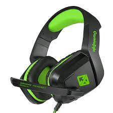
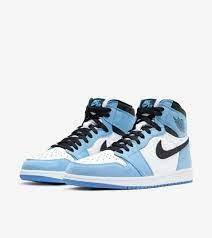

<html>
    <head>
        <title>Case Study - Google Lens vs MobileNet</title>
        <meta name="viewport" content="width=device-width, initial-scale=1.0">
    <link rel="stylesheet" href="https://maxcdn.bootstrapcdn.com/bootstrap/3.4.0/css/bootstrap.min.css">
    <script src="https://ajax.googleapis.com/ajax/libs/jquery/3.4.1/jquery.min.js"></script>
    <script src="https://maxcdn.bootstrapcdn.com/bootstrap/3.4.0/js/bootstrap.min.js"></script>

  <script src="https://cdnjs.cloudflare.com/ajax/libs/p5.js/1.0.0/p5.js"></script>
  <script src="https://unpkg.com/ml5@0.4.3/dist/ml5.min.js"></script>
  
        <link rel="stylesheet" type="text/css" href="style.css">
    </head>
</html>
<body>
        <h2>Case Study  Google Lens vs MobileNet</h2>
    <hr>
    <ol>
            <li>
                <b>Test Image :-</b>
            </li>
            

            <h5>Output on Google Lens:-Headphones </h5><label></label>
            <h5>Output on MobileNet :-Headphones </h5><label></label>
            <br>
                <h4>Result: Both are accurate </h4>
        <br><br>

        <li>
            <b>Test Image :-</b>
        </li>
        

        <h5>Output on Google Lens:-Shoes </h5><label></label>
        <h5>Output on MobileNet :-Nike Air Jordans </h5><label></label>
        <br>
            <h4>Result: Google Lens is more accurate </h4>
    <br><br>

    <li>
        <b>Test Image :-</b>
    </li>
    

    <h5>Output on Google Lens:-Bottle </h5><label></label>
    <h5>Output on MobileNet :-Bottle </h5><label></label>
    <br>
        <h4>Result: Both are accurate </h4>
<br><br>

    </ol>
    <br><br>
    <h4>
        I have tested 3 images,<br>
         <i><b>Google Lens</b></i> has predicted all of them accurately and <i><b>MobileNet</b></i> only predicted 2 of them accurately.<br>
         So according to my case study <i><b>Google Lens</b></i> is more accurate.</h4>
</body>